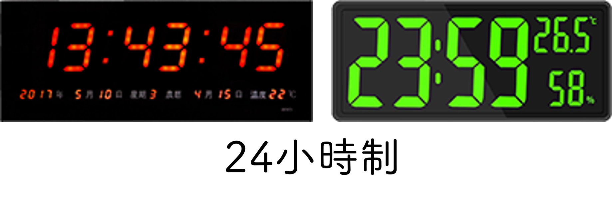
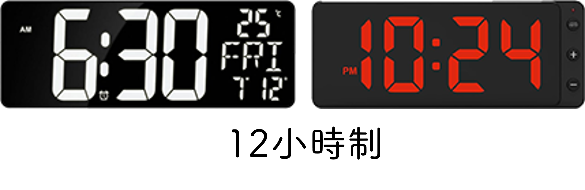

時間(電子鐘形式)
時間(電子鐘形式)

- 市面上的電子時鐘樣式琳瑯滿目，但主要還是分成24小時制與12小時制二種。區別方式可從二個地方來看，⑴AM和PM：24小時制沒有AM、PM的顯示，12小時制則一定要有。⑵「時」的顯示超過12以上：只有24小時制的「時」會大於12。
- 我們口中說的「半夜12點多」，以24小時制顯示是「0時」，而以12小時制顯示是「AM12時」。換句話說，24小時制的「時」會顯示值是0～23；而12小時制的「時」會顯示值AM和PM都是從12～11。


- 例如：電子鐘上顯示的時間可能是：PM 1:05:08 或者 13:05:08 ，但如果將從
(目前時間的[年 v])積木中讀取到的值在未經過任何處理之下直接串接，就會得到 13:5:8 ，以下說明了解決的編程方式。

讀取「時」並轉換成12小時制
從積木中讀取的「時」是24小時制的，範圍值是0～23，如果要編程12小時制的時間要將(大於12的值)-12，以及將"0"值轉成12。
此外，當讀取到的值是(小於12的值)，那麼就是AM時段，否則是PM時段。
以下腳本需使用到下列變數：
(時)用來顯示當前時的變數(時段)用來顯示當前時段的變數，有AM和PM二個值
如果 <<(目前時間的 [時 v]) > (12)> or <(目前時間的 [時 v]) = [0]>> 那麼 //值"13~23"，及值"0" 變數 [時 v] 設為 ([絕對值 v] 數值 ((目前時間的 [時 v]) - (12))) //如果"時"="0"，要絕對值 否則 變數 [時 v] 設為 (目前時間的 [時 v]) end 如果 <(目前時間的 [時 v]) < (12)> 那麼 //值"0~11" 變數 [時段 v] 設為 [A.M.] 否則 變數 [時段 v] 設為 [P.M.] end
 讀取「分」、「秒」並做補位處理
讀取「分」、「秒」並做補位處理從積木中讀取的「分」和「秒」、當是小於10的值時，只有讀到一個數字，但現實中的電子鐘會以二位數字來顯示「分」和「秒」，因此需要在十位數補上「0」值。
以下腳本需使用到下列變數：
(分)用來顯示當前分的變數(秒)用來顯示當前秒的變數
如果 <(目前時間的 [分 v]) < (10)> 那麼 //一位數字 變數 [分 v] 設為 (字串組合 [0] (目前時間的 [分 v])) 否則 變數 [分 v] 設為 (目前時間的 [分 v]) end 如果 <(目前時間的 [秒 v]) < (10)> 那麼 //一位數字 變數 [秒 v] 設為 (join [0] (目前時間的 [秒 v])) 否則 變數 [秒 v] 設為 (目前時間的 [秒 v]) end
12小時制電子鐘完整編程
除上述變數外另建立以下變數：
(時間)用來顯示串接後的完整時間
當 @greenflag 被點擊 重複無限次 如果 <<(目前時間的 [時 v]) > (12)> or <(目前時間的 [時 v]) = [0]>> 那麼 //值"13~23"，及值"0" 變數 [時 v] 設為 ([絕對值 v] 數值 ((目前時間的 [時 v]) - (12))) //如果"時"="0"，要絕對值 否則 變數 [時 v] 設為 (目前時間的 [時 v]) end 如果 <(目前時間的 [分 v]) < (10)> 那麼 //一位數字 變數 [分 v] 設為 (字串組合 [0] (目前時間的 [分 v])) 否則 變數 [分 v] 設為 (目前時間的 [分 v]) end 如果 <(目前時間的 [秒 v]) < (10)> 那麼 //一位數字 變數 [秒 v] 設為 (join [0] (目前時間的 [秒 v])) 否則 變數 [秒 v] 設為 (目前時間的 [秒 v]) end 如果 <(目前時間的 [時 v]) < (12)> 那麼 //值"0~11" 變數 [時段 v] 設為 [A.M.] 否則 變數 [時段 v] 設為 [P.M.] end 變數 [時間 v] 設為 (字串組合 (字串組合 (字串組合 (字串組合 (字串組合 (字串組合 (時) [:]) (分)) [:]) (秒)) [ ]) (時段)) //最後第二格是空格 end
24小時制電子鐘完整編程
當 @greenflag 被點擊 重複無限次 變數 [時 v] 設為 (目前時間的 [時 v]) 如果 <(目前時間的 [分 v]) < (10)> 那麼 //一位數字 變數 [分 v] 設為 (字串組合 [0] (目前時間的 [分 v])) 否則 變數 [分 v] 設為 (目前時間的 [分 v]) end 如果 <(目前時間的 [秒 v]) < (10)> 那麼 //一位數字 變數 [秒 v] 設為 (join [0] (目前時間的 [秒 v])) 否則 變數 [秒 v] 設為 (目前時間的 [秒 v]) end 變數 [時間 v] 設為 (字串組合 (字串組合 (字串組合 (字串組合 (時) [:]) (分)) [:]) (秒)) end